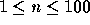
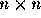
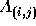
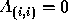
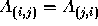
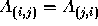
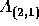
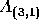
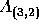

| MPI Maelstrom |
BIT has recently taken delivery of their new supercomputer, a 32 processor Apollo Odyssey distributed shared memory machine with a hierarchical communication subsystem. Valentine McKee's research advisor, Jack Swigert, has asked her to benchmark the new system.
``Since the Apollo is a distributed shared memory machine, memory access and communication times are not uniform,'' Valentine told Swigert. ``Communication is fast between processors that share the same memory subsystem, but it is slower between processors that are not on the same subsystem. Communication between the Apollo and machines in our lab is slower yet.''
``How is Apollo's port of the Message Passing Interface (MPI) working out?'' Swigert asked.
``Not so well,'' Valentine replied. ``To do a broadcast of a message from one processor to all the other n-1 processors, they just do a sequence of n-1 sends. That really serializes things and kills the performance.''
``Is there anything you can do to fix that?''
``Yes,'' smiled Valentine. ``There is. Once the first processor has sent the message to another, those two can then send messages to two other hosts at the same time. Then there will be four hosts that can send, and so on.''
``Ah, so you can do the broadcast as a binary tree!''
``Not really a binary tree -- there are some particular features of our network that we should exploit. The interface cards we have allow each processor to simultaneously send messages to any number of the other processors connected to it. However, the messages don't necessarily arrive at the destinations at the same time -- there is a communication cost involved. In general, we need to take into account the communication costs for each link in our network topologies and plan accordingly to minimize the total time required to do a broadcast.''
The input will describe the topology of a network connecting n processors. The first line of the input will be n, the number of processors, such that  .
The rest of the input defines an adjacency matrix, A. The adjacency matrix is square and of size  . Each of its entries will be either an integer or the character x. The value of  indicates the expense of sending a message directly from node i to node j. A value of x for indicates that a message cannot be sent directly from node i to node j.
Note that for a node to send a message to itself does not require network
communication,
so  for  . Also, you may assume that the network
is undirected (messages can
go in either direction with equal overhead), so that  .
Thus only the entries on the
(strictly) lower triangular portion of A will be supplied.
. Also, you may assume that the network
is undirected (messages can
go in either direction with equal overhead), so that  .
Thus only the entries on the
(strictly) lower triangular portion of A will be supplied.
The input to your program will be the lower triangular section of A. That is, the second line of input will contain one entry,  . The next line will contain two entries,  and  , and so on.
Your program should output the minimum communication time required to broadcast a message from the first processor to all the other processors.
5 50 30 5 100 20 50 10 x x 10
35